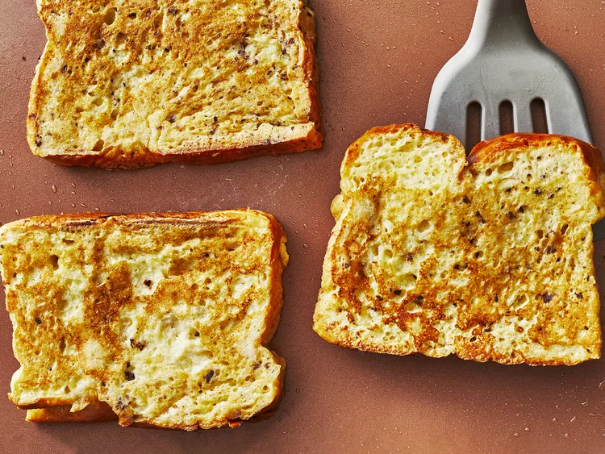

French Toast

Description
This fabulous French toast recipe works with many types of bread — white, whole wheat, brioche, cinnamon-raisin, Italian, or French!
Delicious served hot with butter and maple syrup.
Ingredients
- 2 cups of milk
- 2 large eggs
- 1 teaspoon vanilla extract
- 1/2 teaspoon ground cinnamon
- Salt
- 6 thick slices bread
- 1 tablespoon butter
Steps
- Whisk milk, eggs, vanilla, cinnamon, and salt together in a shallow bowl.
- Lightly butter a griddle or skillet and heat over medium-high heat.
- Dunk bread in the egg mixture, soaking both sides.
- Transfer to the hot skillet and cook until golden, 3 to 4 minutes per side.
- Serve hot.